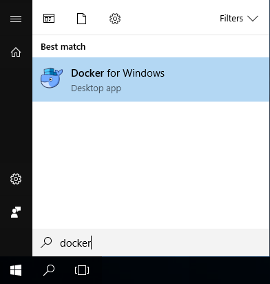
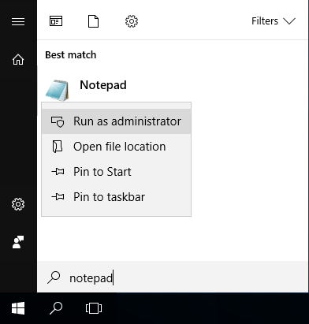
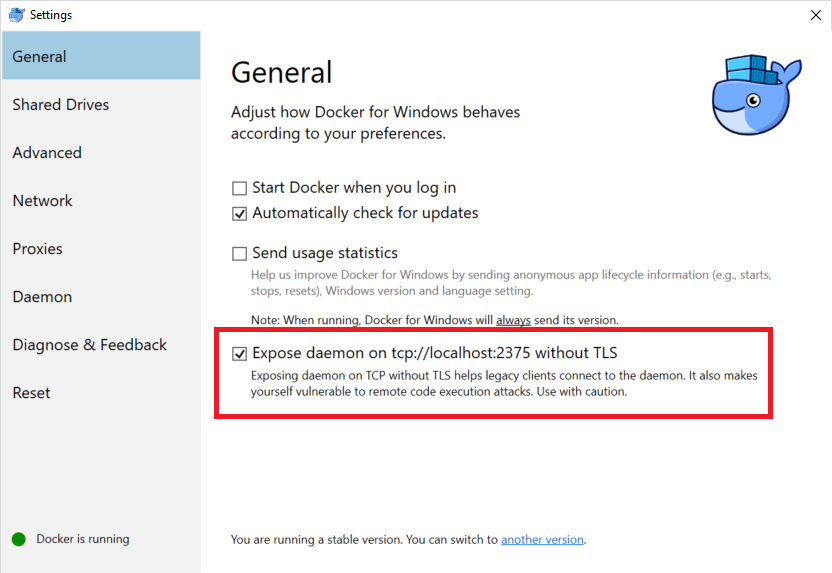

Installation Guide - Windows (Docker)
This guide will help you to set up a containerized installation of the Spryker demo shop in Windows
This solution can be used for demo and development purposes only. It is not supported in production environment.
To install Spryker demo shop on a Windows machine:
- Install Docker for Windows.
- Download Docker installation package.
- Run the installer and follow the instructions.
- To complete installation, sign out of Windows, and then sign in again.
-
Start Docker. To do this, click Start, type docker, and select Docker for Windows.
 View Screenshot
View Screenshot

-
The system will ask you to restart your computer in order to enable Hyper-V Virtualization. Click OK.
-
Docker relies on hardware virtualization. If it is disabled, you will get an error message after restart. To fix it, enable virtualization in BIOS.
For instructions on how to enable it, refer to your PC manual. Depending on the motherboard manufacturer, the feature can be called Intel Virtualization Technologies, VT-x, VT-d, VT-c, AMD-V etc.
- Now, you need to configure Docker. Right-click the Docker icon in the System Tray and select Settings.
-
Select Advanced and specify the following settings: 2 CPUs and at least 4096 MB of memory.

Click Apply.
-
Select Daemon and disable the Experimental features option.

Click Apply.
- At this point you need to import the demo shop and launch it. Open Windows Command Prompt. To do this, press Win+R, type cmd and press Enter.
- Create a working folder in your home directory. For this purpose, execute the following commands in the Command Prompt:
C:\Users\john.doe>mkdir demoshop C:\Users\john.doe>cd demoshop - Download the docker-compose.yml file and save it to the directory you created on the previous step.
- Configure and start the demo shop as follows:
docker volume create app-sync docker volume create jenkins-sync docker-compose up -d - To be able to view the demo shop in your web browser, you also need to add the following entries to your hosts file:
127.0.0.1 www.de.demoshop.local 127.0.0.1 os.de.demoshop.localHow- Click Start.
- Type Notepad.
- In the search results, right-click Notepad and select Run as administrator.

- Open the following file: C:\Windows\System32\drivers\etc\hosts.
- Add the entries to the very end of the file.
- Save the changes.


Now, the demo shop is installed and ready to use. To access it, use the following links:
- http://www.de.demoshop.local/ - shop frontend;
- http://os.de.demoshop.local:8081/ - administrator interface.
If you get a file with text waiting for deploy page when accessing one of the links above, that means that the demo shop installation is not complete yet. Try again a few minutes later.
To start, stop or update the demo shop, you need to use Windows Command Prompt:
- Open Windows Command Prompt. To do this, press Win+R, type cmd and press Enter.
- Go to the folder where you installed the Demoshop by executing the following command:
cd "%USERPROFILE%\demoshop" - Once in the demo shop installation folder, use the following commands:
- To start the demo shop:
docker-compose up - To stop the demo shop:
docker-compose down - To update the demo shop to the latest version:
docker-compose down docker volume rm app-sync docker volume create app-sync docker-compose up -d
- To start the demo shop:
To develop with Docker, do the following:
- Enable Windows subsytem for Linux (WSL):
- Click Start, type Turn Windows and click the Turn Windows features on and off item.
- Enable the Windows Subsystem for Linux option.

- Make sure the Developer Mode is enabled:
- Click Start, type For dev and click the For developers settings item.
- Check whether the Developer mode option is selected.
-
Install Bash for Windows. To do this, open the Command Prompt and type lxrun /install.
If bash for windows was already installed on your system before the Creators Update, you may need to re-install it to get the latest distro.
- Launch and update Ubuntu:
- Bash on Ubuntu on Windows is now an app on your system. Launch it.
- Update the OS using the following commands:
sudo apt-get update sudo apt-get upgrade -
Install Docker in WSL bash.
Note that Docker Server is not supported in the WSL environment. Instead, you will need to expose Docker for Windows to WSL on later steps.
-
Install Docker Compose:
sudo apt install docker-composeIf that method does not work for you, follow these instructions.
- Install Ruby and Ruby-dev:
sudo apt-get install ruby ruby-dev - Install Docker-Sync:
sudo gem install docker-sync - Set your docker host as an ENV variable. To do this, add export DOCKER_HOST=tcp://127.0.0.1:2375 to your ~/.bashrc file of WLS.
- Now, you need to expose Windows Docker to WSL. Right-click the Docker icon in the System Tray and select Settings.
-
Select General and enable option Expose daemon on tcp://localhost:2375 without TLS.

Click Apply.
- Install Unison. To do this, run the following commands:
sudo apt-get install ocaml make emacs wget https://github.com/bcpierce00/unison/archive/v2.51.2.tar.gz tar xvf v2.51.2.tar.gz cd unison-2.51.2 make UISTYLE=text sudo cp src/unison /usr/local/bin/unison sudo cp src/unison-fsmonitor /usr/local/bin/unison-fsmonitor - Put the docker-sync.yml file in the your demoshop folder (the same folder where the docker-compose.yml file is located). You now have a docker-sync solution via the unison strategy.
- To start developing using the solution, run the Docker containers using the docker-sync or
docker-sync-stack commands. For example, you can use the following to start development:
cd /mnt/c/Users/$USER/demoshop docker-compose up -d docker-sync startBy default, docker-sync synchronizes the demo shop installation inside Docker container demoshop_app_1 with folder project. It is located in the same directory where the docker-compose.yml and docker-sync.yml files are located, for example C:\Users\john.doe\demoshop\project. If you want to synchronize another folder with the container, specify it in the syncs\app-sync\src element of file docker-sync.yml. The folder path must be specified in the Linux format relative to the WSL file system, for example:
version: "2" ... syncs: app-sync: ... src: '/mnt/c/projects/myproject'Your Windows drives are already mounted in WSL under /mnt. For instance, your C: drive is available in the /mnt/c/) folder of WSL.
If you make any changes in the docker-sync.yml file, restart the synchronization by first running docker-sync clean, and then docker-sync start.

Last review date: Apr. 5th, 2018